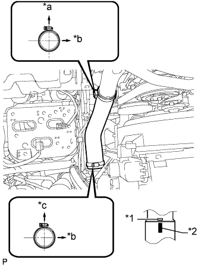

ГЕНЕРАТОР > УСТАНОВКА |
| 1. УСТАНОВИТЕ ГЕНЕРАТОР |
 |
Установите генератор и закрепите его 2 болтами.
Подсоедините провод генератора и закрепите его гайкой.
Установите заглушку контакта.
Подсоедините разъем генератора.
| 2. УСТАНОВИТЕ ВОЗДУШНЫЙ ШЛАНГ № 1 |
|  |
Совместите нанесенную краской метку на воздушном шланге промежуточного охладителя с рельефной меткой на промежуточном охладителе.
| *1 | Рельефная метка |
| *2 | Метка, нанесенная краской |
| *a | Задняя сторона автомобиля |
| *b | Левая сторона |
| *c | Верх |
Затяните 2 зажима.
| 3. УСТАНОВИТЕ КОРПУС ВОЗДУШНОГО ФИЛЬТРА В СБОРЕ |
Установите корпус воздушного фильтра и закрепите его 3 болтами.
| 4. УСТАНОВИТЕ ФИЛЬТРУЮЩИЙ ЭЛЕМЕНТ ВОЗДУШНОГО ФИЛЬТРА В СБОРЕ |
| 5. УСТАНОВИТЕ КРЫШКУ ВОЗДУШНОГО ФИЛЬТРА В СБОРЕ |
Присоедините 4 зажима, чтобы закрепить крышку воздушного фильтра.
За исключением моделей, предназначенных для эксплуатации в холодном климате:
Подсоедините разъем датчика массового расхода воздуха и закрепите его 2 зажимами.
Для автомобилей, предназначенных для эксплуатации в холодном климате:
Подсоедините разъем датчика массового расхода воздуха и закрепите его 3 зажимами.
| 6. УСТАНОВИТЕ УПЛОТНЕНИЕ ФАРТУКА ПРАВОГО ПЕРЕДНЕГО КРЫЛА |
Закрепите 4 фиксаторами заднее уплотнение фартука правого переднего крыла.
| 7. УСТАНОВИТЕ ПОЛИКЛИНОВОЙ РЕМЕНЬ ВЕНТИЛЯТОРА И ГЕНЕРАТОРА |
Установите поликлиновой ремень вентилятора и генератора (Нажмите здесь).
| 8. ПОДСОЕДИНИТЕ ПРОВОД К ОТРИЦАТЕЛЬНОМУ ВЫВОДУ АККУМУЛЯТОРНОЙ БАТАРЕИ |